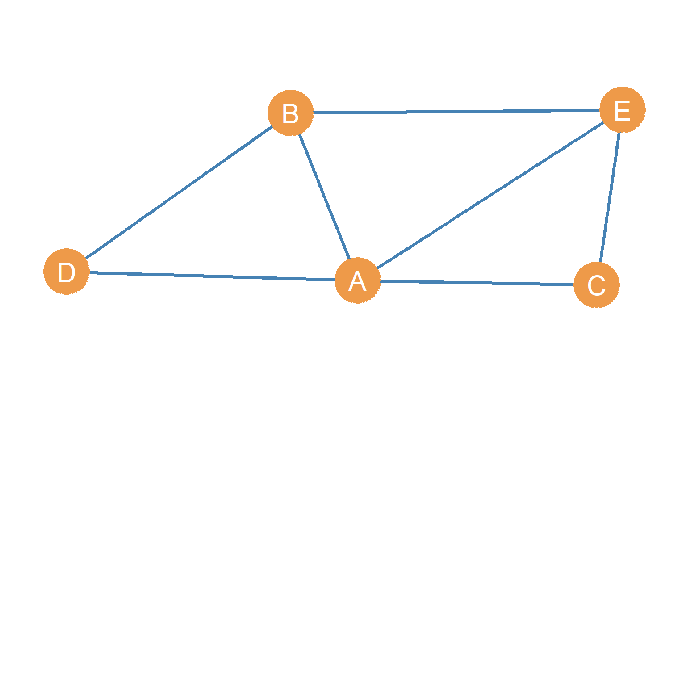
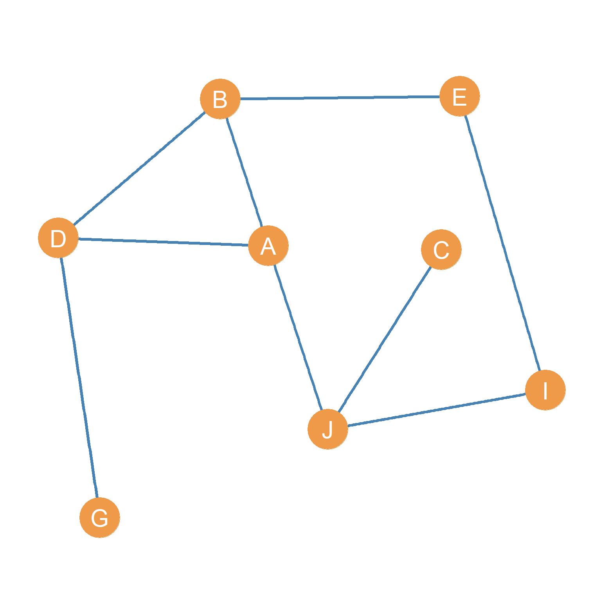

3 Graphs and their Subgraphs
3.1 Graphs and Subgraphs
Consider the graph shown in Figure 3.1 (a). If all the actors that you are interested in studying are included here, we would refer to it as the whole network. However, sometimes, even when we collect data on a large number of actors we may be interested in analyzing not the whole network, but only some parts of it. How do we do that?


Well, good thing that a graph is actually a set of two sets. If you remember your high school set theory, you can always take a set and consider only a subset of the original members.
Since graphs are sets, we can do the same thing. A subset of the original nodes (or edges) of a graph, is called a subgraph. So if \(G =\{E,V\}\) is the original graph, the subgraph \(G' = \{E',V'\}\) is a subset of \(G\), which is written \(G \subset G'\), with the understanding that \(E' \subset E\) and \(V' \subset V\). In mathematics, “\(\subset\)” is the symbol for subset. Thus, \(A \subset B\) is read as “set A is a subset of set B.”
For instance, let us say we are interested in just analyzing actors A, B, C, D, and E in the graph shown in Figure 3.1 (a). They seem to be a close-knit group of people. In that case, as noted earlier, if we call the original graph \(G\) with vertex and edge sets \(\{E, V\}\)we can define a new subgraph \(G'\), whose node subset \(V'\) only includes the actors we are interested in studying, in this case \(V' = \{A, B, C, D, E\}\), where \(V' \subset V\).
The subgraph \(G'\) is shown in Figure 3.1 (b). It looks exactly like we wanted, capturing the relations between an inter-connected subgroup of actors in the original graph. Note that the edge set of the subgraph \(E'\) only includes those edges that are incident to the other nodes in the subgraph (as defined in Chapter 2) and omits those in the original graph that are incident to nodes that are not in the subgraph, so \(E' \subset E\). As we will see in a later lesson, well-connected subgroups of actors of an original graph are called a cohesive subset.
3.2 Vertex and Edge-Induced Subgraphs
For any graph, we can define a subgraph based on any old random subset of the original node set. It is completely up to us. For instance, we could define a new subgraph \(G''\) of the original graph shown in Figure 3.1 (a), that includes the node set \(V'' = \{D, E, G, I\}\). That is shown in Figure 3.1 (c). That subgraph is weird (composed of two standalone connected dyads) and probably not very useful, but it is a subgraph of the original graph anyways!
Just like we can define subgraphs based on the node set of a graph, we can define subgraphs based on subsets of the original edge set. For instance, we could pick the edges \(E' = \{AB, AC, AJ\}\) and define a subgraph based on them, which will necessarily include node set \(V' = \{A, B, C, J\}\).
When a subgraph is defined by selecting a subset of nodes to keep (the common case) it is called a vertex-induced subgraph of the original graph, like Figure 3.1 (b). When a subgraph is defined by picking a subset of edges from the original graph to keep, it is called (you guessed it) an edge-induced subgraph of the original graph.
3.3 Vertex and Edge-Deleted Subgraphs
A common reason for defining subgraphs in social network analysis is when we wonder what a network would look like if were to get rid of an actor or a set of actors. Sometimes this is useful, when we want to get a sense of how important that set of actors is for holding the network together.
So it is possible to define a subgraph by deleting nodes. This is written \(G' = G - \{a, b, c\}\), where \(\{a, b, c\}\) is the set of nodes we are deleting. So this says “give me a subgraph \(G'\) that is equal to the original graph \(G\) minus nodes \(\{a, b, c\}\).” In our previous example, Figure 3.1 (b) is the subgraph that results when we delete nodes \(\{F, G, H, I, J\}\) from the graph in Figure 3.1 (a): \(G' = G - \{F, G, H, I, J\}\). This is called a vertex-deleted subgraph of the original graph.
The subgraph that results from removing all the nodes of the original graph (so that the cardinality of the node set is now zero) is called the null graph. The subgraph that results from removing all the nodes of the original graph except for one (so that the cardinality of the node set of the resulting subgraph is equal to one) is called the singleton graph, also called the trivial graph as we saw in Chapter 2 (one is indeed a lonely number in social networks).
Just like we can create subgraphs by deleting nodes, we can also create subgraphs by removing edges. For instance Figure 3.1 (d) is the subgraph that results from removing edges \(\{AB, AE, AC, CI, CE, GJ\}\) from the graph shown in Figure 3.1 (a). This is written \(G' = G - \{AB, AE, AC, CI, CE, GJ\}\), which says “give me a new graph \(G'\) which is equal to the original graph \(G\) minus edges \(\{AB, AE, AC, CI, CE, GJ\}\). This is called the edge-deleted subgraph of the original graph.
A subgraph created by removing only edges, but leave all the nodes of the original graph intact, like in Figure 3.1 (d), is also called a spanning subgraph of the original graph.
The subgraph that results from removing all the edges in a graph, such that the cardinality of the edge set turns to zero, is called the empty graph.
As we will see later, subgraphs (as well as vertex and edge deletion) are a useful concept for discussing levels at an “in-between” levels, above the node level but “below” the whole network level: subgroups. However, subgraphs are also useful for network concepts at the node level, because there is a special type of subgraph, called the ego graph that is defined by picking a central node and the nodes that are connected to it, along with the edges connecting the nodes surrounding ego. We will cover ego graphs in ?sec-egonets.